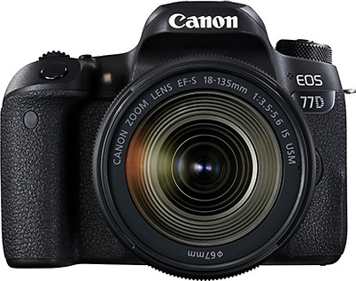

Photography Basic | Part 8
Live View
The implementation of Dual Pixel CMOS AF in Canon's latest camera models have vastly improved shooting conditions in Live View. Live View, which features fast AF speed that measures up to viewfinder AF, is gradually becoming the choice method of shooting for many photographers. In the following, we will explain more about the characteristics of Live View.
Live View: A method whereby a real-time image is projected onto the LCD screen
Points-to-note
-Changes in colour and brightness are observable in real-time.
-Does not put pressure onto the subject while shooting.
-Enables you to shoot at a comfortable posture when shooting at high or low positions.
Which kind of scene types are suitable for Live View shooting? Which are better for viewfinder shooting?
Live View is a feature that enables you to verify the image projected on the rear LCD monitor as you shoot. DSLRs such as the EOS 77D and EOS 800D enable you to switch to Live View with a push of the Live View shooting button. Since Live View is the standard method employed for shooting in mirrorless cameras, such as the EOS M6, it can be used once the camera is switched on.
The biggest advantage of Live View is that it enables you to view changes in colour and brightness before releasing the shutter. When you perform adjustments in white balance and exposure compensation, the effects are simultaneously reflected on the LCD screen, so that you can preview them and determine whether to go ahead to shoot with the adjustments or adjust them further.
There are also other advantages. Being able to magnify the display and select the area you want to focus on makes it very useful when you want to carry out pin-point focusing, especially in macro photography. As Live View shooting removes the need for the photographer to look into the viewfinder which obscures his or her face, it relieves the subject of the pressure of being photographed—essential for portrait photography, where you need to bring out and capture the subject’s most natural expressions. Moreover, Live View is very useful when shooting videos. The latest cameras equipped with Dual Pixel CMOS AF enables exceptional AF speed and seamless tracking of moving subjects when shooting videos.
Live View shooting and the rotatable LCD monitor: An outstanding pairing
Combining the use of Live View with the rotatable LCD monitor gives you a greater level of freedom for composition. You can even shoot at high and low positions without having to withstand uncomfortable postures. Rotating the LCD monitor by 180 degrees even enables you to take selfies with ease.
Rotatable LCD monitors come in either the ‘vari-angle’ or ‘tilt’ types, with vari-angle types used in DSLRs, and tilt types used in mirrorless cameras. Both of which feature their respective advantages and disadvantages. We explain more below.
Vari-angle type (screen flips horizontally)
EOS 77D
Advantages
-Shoot from a high or low angle even while keeping the main camera body in a horizontal position
-Don’t have to be directly behind the camera to shoot—it can be held somewhere slightly to the side
Disadvantages
-A need to get used to aligning the image, as the optical axis of the lens and LCD monitor are not aligned
-Requires more time to put the LCD screen back into place
Tilt-type monitors (screen flips vertically)
EOS M5
Advantages
-Optical axis of the lens and LCD monitor is aligned
-Able to put the LCD monitor back into place immediately
Disadvantages
-Limits to how you can move it
-Will have to tilt the camera to shoot from a low (or high) angle